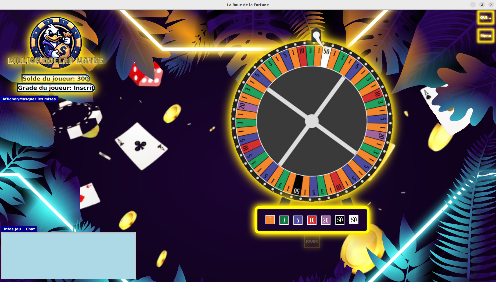

Notre projet de SAE s'est déroulé au sein d'un groupe de cinq étudiants, avec deux
professeurs qui ont endossé le rôle de clients. La mission qui nous a été confiée consistait à
concevoir et développer un jeu de casino dans le langage de programmation de notre choix. La
flexibilité dans le choix du langage a permis à notre équipe de sélectionner Java, avec
l'utilisation de la bibliothèque graphique Java FX pour la réalisation des jeux de la roue de la
fortune
Choix technologiques :
Opter pour Java FX nous a offert une plateforme puissante pour créer des interfaces
graphiques interactives, tout en exploitant la polyvalence du langage Java. Cette décision a été
prise en tenant compte de la familiarité de l'équipe avec Java, ainsi que de la robustesse de Java
FX pour la création d'applications graphiques sophistiquées.
Méthodes agiles pour une amélioration continue :
Nous avons adopté les méthodes agiles tout au long du projet afin de garantir un contact
régulier avec nos clients, les deux professeurs. Ces méthodes agiles ont joué un rôle crucial
dans le processus de développement en nous permettant d'ajuster constamment le projet en
fonction des retours des clients. La communication régulière avec les clients a contribué à
maintenir le projet aligné sur leurs attentes, favorisant ainsi une amélioration continue et une
réactivité aux changements.
Objectifs personnels :
Rôle de Scrum Master :
En qualité de Scrum Master tout au long de la SAE, ma mission était d'assurer la bonne
mise en œuvre des pratiques Scrum au sein de l'équipe et de faciliter la communication entre
les membres. Cela impliquait plusieurs responsabilités cruciales visant à maintenir une
dynamique de travail efficiente et à résoudre les éventuels obstacles rencontrés par l'équipe.
Organisation des réunions :
J'ai orchestré des réunions hebdomadaires, se déroulant deux fois par semaine, pour
discuter des défis à relever. Ces rencontres régulières ont permis de maintenir un suivi constant
3
des objectifs fixés et de discuter des problèmes éventuels en vue de trouver des solutions
adaptées. Le rythme bihebdomadaire a facilité une communication fluide tout en évitant de
surcharger l'emploi du temps de l'équipe.
Gestion de la partie graphique :
J’ai aussi géré la partie graphique du projet. Cela comprenait la coordination des
différentes vues telles que les interfaces de jeux, les menus, et les règles du jeu. La cohérence
visuelle et la convivialité étaient des aspects cruciaux afin de garantir une expérience utilisateur
optimale.
Rédaction de la documentation :
Un autre volet de mon rôle en tant que Scrum Master était la rédaction de la
documentation du projet. J'ai mis l'accent sur les aspects juridiques, veillant à ce que le projet
soit conforme aux réglementations en vigueur.
Sound design et gestion des grades :
La composante artistique du projet, en l'occurrence le Sound design. Cela impliquait la
sélection et l'intégration de sons libres de droits pour enrichir l'expérience utilisateur. En
parallèle, j'ai pris en charge la gestion des grades au sein du jeu, veillant à un équilibre approprié
pour maintenir l'intérêt des joueurs à la demande des clients.
Résolution de problèmes de code :
J'ai activement participé à la résolution de divers problèmes de code. Cette implication
directe dans le développement technique du projet m'a permis de comprendre les défis
spécifiques auxquels l'équipe était confrontée sur le plan du codage et d'apporter des solutions
appropriées.
Méthodes de travail :
Communication ouverte :
En tant que Scrum Master, j'ai joué un rôle central dans le maintien d'une
communication ouverte au sein de l'équipe. J'ai encouragé les membres à partager leurs idées,
à exprimer leurs préoccupations et à proposer des solutions. Cette transparence a renforcé la
confiance au sein de l'équipe, créant un climat propice à la créativité et à la résolution efficace
des problèmes. Nous avons ainsi rencontré que très peu de conflits et à chaque fois mineures.
Réunions régulières :
Les réunions hebdomadaires, organisées deux fois par semaine, ont été des moments
clés pour discuter des avancées du projet et des défis à surmonter. En tant que Scrum Master,
j'ai maintenu un ordre du jour clair, encourageant la participation de chaque membre. Ces
réunions régulières ont joué un rôle essentiel dans le suivi du travail réalisé et dans
l'identification des ajustements nécessaires.
Méthodes agiles pour l'évaluation de la vélocité :
L'utilisation de méthodes agiles a permis d'évaluer la vélocité de l'équipe de manière
systématique. Cela a favorisé une compréhension approfondie des capacités de l'équipe à livrer
des fonctionnalités dans des délais spécifiques. L'évaluation de la vélocité a été un outil
précieux pour ajuster les objectifs, optimiser les processus, et assurer une amélioration
continue de la performance de l'équipe.
Gestion efficace du temps et alignement sur la vision du client :
Les rendus réguliers et les contacts fréquents avec les clients ont été des éléments clés
pour maintenir une gestion efficace du temps. Les interactions fréquentes ont permis d'ajuster
le projet en fonction des retours des clients, contribuant ainsi à un alignement constant sur leur
vision. Cette proximité avec les clients a également facilité la prise de décisions et la résolution
rapide des problèmes.
Communication quotidienne :
La communication au sein de l'équipe s'est étendue au-delà des réunions formelles, se
déroulant quotidiennement sur un groupe Discord dédié. Ces discussions ont permis de traiter
rapidement les problèmes, de partager des informations importantes et de maintenir un niveau
de collaboration entre les membres, renforçant ainsi la cohésion de l'équipe.
Difficultés rencontrées et solutions mises en œuvre :
Approche collaborative face aux difficultés :
Malgré la relative absence de difficultés majeures dans le projet, l'équipe a privilégié une
approche collaborative pour surmonter les obstacles potentiels. Cette démarche visait à
renforcer la cohésion de l'équipe et à encourager une résolution collective des défis qui
pourraient surgir.
Discussions fréquentes en équipe :
Les discussions en équipe étaient une pratique courante pour aborder collectivement
les problèmes éventuels. Ces sessions permettaient d'exploiter la diversité des perspectives au
sein de l'équipe, favorisant ainsi l'émergence d'idées et la prise de décisions. La collaboration
constante a créé un environnement où chacun se sentait libre d'exprimer ses idées et de
contribuer activement à la recherche de solutions.
Délégation des problèmes :
En cas de blocage individuel, l'équipe a adopté la stratégie de déléguer le problème à un
autre membre. Cette approche a apporté un regard neuf sur les obstacles, permettant à un
quelqu’un d’autre de fournir une perspective différente. La délégation a également favorisé le
partage des connaissances au sein de l'équipe.
Apprentissages acquis ou travaillés :
Développement de compétences en gestion de projet :
En tant que Scrum Master, la gestion de projet a été au cœur de mes responsabilités. J'ai
appris à planifier, organiser et coordonner les différentes phases du projet, en veillant à
respecter les délais et à atteindre les objectifs fixés. Cela a renforcé ma capacité à prendre en
charge des projets complexes, en utilisant des méthodologies agiles pour assurer une flexibilité
et une adaptation constantes.
Amélioration des compétences en communication :
La communication efficace a été un aspect essentiel de mon rôle de Scrum Master. J'ai
développé des compétences pour transmettre clairement les informations, faciliter les
échanges au sein de l'équipe et maintenir une communication avec les clients. Cette
expérience a enrichi ma capacité à adapter mon discours en fonction des différentes audiences,
favorisant ainsi une compréhension commune des objectifs du projet.
Renforcement des compétences en résolution de problèmes :
La résolution de problèmes a été une compétence clé que j'ai développée en tant que
Scrum Master. En faisant face à divers défis tout au long du projet, j'ai appris à analyser
rapidement les situations, à identifier les causes des problèmes et à proposer des solutions.
Cette compétence s'est avérée cruciale pour maintenir la progression du projet de manière
fluide.
Acquisition de compétences techniques codage :
Mon implication dans la gestion de la partie graphique et le codage du projet a été une
opportunité significative pour développer mes compétences techniques. J'ai acquis une
compréhension approfondie de Java FX pour la partie graphique, travaillant sur l'interface
utilisateur et la conception visuelle. En parallèle, j'ai contribué activement à la résolution de
problèmes de code, renforçant mes compétences en développement logiciel.
Compréhension approfondie de la vélocité et de l'amélioration continue :
Les méthodes agiles m'ont permis d'approfondir ma compréhension de concepts clés tels que
la vélocité de l'équipe et l'amélioration continue. La vélocité a été un indicateur essentiel pour
évaluer la capacité de l'équipe à livrer des fonctionnalités, tandis que l'amélioration continue a
été intégrée dans notre approche quotidienne pour optimiser constamment nos processus et
performances.
Capture d'écran

Documents attestant de mon implication (compte rendu de réunion...)